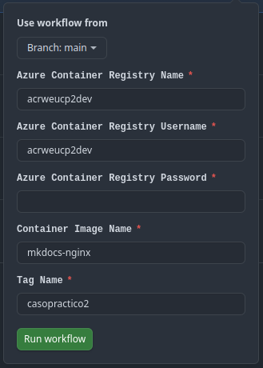

Despliegue¶
A continuación, se explica cómo reproducir los pasos necesarios para llevar a cabo el caso práctico sobre el repositorio. Se detallan las instrucciones para:
- 1. Despliegue de la infraestructura
- 2. Publicación de las imagenes
- 3. Configuración de la VM
- 4. Configuración del AKS
Despliegue de la infraestructura¶
El despliegue de la infraestructura se realiza con Terraform desde la máquina local, asegurando que la configuración es válida antes de aplicar los cambios y provisionar los recursos necesarios.
-
Inicializa terraform en el directorio de ficheros terraform.
Output:terraform -chdir=./terraform initTerraform has been successfully initialized! -
Ejecuta la validación de los ficheros generados con el siguiente comando:
output:terraform validateSuccess! The configuration is valid. -
Despliega la infraestructura con el siguiente comando, por defecto se despliega en dev. Siempre puedes añadir el flag
-var="environment=pro"para especificar un entorno entredev|pre|proterraform -chdir=./terraform apply --auto-approve
Automatización de variables
Tras el despliegue de toda la infraestructura se generan automáticamente las variables globales necesarias para poder realizar lo que queda del ejercicio ejecutando el fichero setup.sh.
source setup.sh
Publicación de las imagenes¶
Publicación de las imágenes mediante Ansible¶
Para publicar imágenes en el ACR utilizando Ansible, se ha creado un playbook llamado publish-images.yaml. Para llevar a cabo su ejecución, es necesario es necesario ejecutar desde el directorio de ansible el siguiente comando.
ansible-playbook publish_images.yml -i hosts.yml --ask-vault-pass
Este comando construye la imagen de MkDocs, descarga la imagen pública de StackEdit y publica ambas imágenes en el ACR desde la VM.
Publicación mediante Github Actions (fuera de alcance)¶
En este apartado se explica la publicación de imágenes en el ACR utilizando GitHub Actions. Aunque no formaba parte del alcance del ejercicio, se ha implementado este método para probar un flujo habitual en proyectos donde un repositorio genera y publica imágenes de contenedor tras una release.
La publicación de la imagen se automatiza mediante el workflow Publish mkdocs image to ACR de GitHub Actions, que envía la imagen al Azure Container Registry (ACR). Para ello, se deben proporcionar las credenciales adecuadas y validar la ejecución del proceso.
-
Rellenar los datos del formulario del workflow con username y pwd del ACR desplegado en Azure.
Visualizar usuario y contraseña del ACR
Siempre puedes ejecutar este comando para recuperar el usuario y la contraseña del ACR.
az acr credential show --name acrweucp2dev --query "[username, passwords[0].value]" -o tsv
-
Ejecutar workflow y validar la correcta ejecución del job
Configuración de la VM¶
La configuración de la VM se llevará a cabo desde la máquina local utilizando Ansible, accediendo por SSH para realizar comprobaciones y garantizar el correcto despliegue del entorno.
-
Comprobar conexión a la VM por SSH
ssh -i ~/.ssh/az_unir_rsa charlstown@${VM_IP} exit -
Ejecutar ansible apuntando a la VM. Asegurarse que el comando se ejecuta desde
./ansible. Para forzar ansible a recrear todo desde el principio es posible usar los argumentos--force-handlersy--extra-vars "recreate=true".ansible-playbook ansible/playbook.yml -i ansible/hosts.yml --extra-vars "@ansible/vars.yml" --ask-vault-passEste playbook se ejecuta apuntando a un Vault de ansible donde se han guardado las credenciales usadas para crear el fichero
htpasswd.usersen la carpeta/etc/nginx/auth/htpasswd.usersde la VM.Mostrar contraseñas guardadas en el vault
Para visualizar las contraseñas guardadas en el vault puedes ejecutar el comando:
ansible-vault view secrets.yml
Configuración del AKS¶
El despliegue de la aplicación en el clúster de Kubernetes se realiza mediante Ansible, aplicando los manifiestos necesarios para crear el namespace, el deployment, el PersistentVolumeClaim, el Service y el secret de acceso al ACR. Todo el proceso queda automatizado en el playbook playbook_aks.yml.
-
Descargar credenciales del AKS para interactuar con el clúster desde kubectl.
El siguiente comando guarda las credenciales del AKS en
/home/<USER>/.kube/configy marca como contexto el AKS seleccionado.az aks get-credentials --resource-group rg-weu-cp2-dev --name aks-weu-cp2-dev -
Ejecutar el playbook de Ansible para desplegar la aplicación en AKS. Este comando debe lanzarse desde la raíz del proyecto.
ansible-playbook playbook_aks.yml -i hosts.yml --ask-vault-pass -
Para obtener la IP pública del servicio y acceder a la aplicación desplegada, ejecuta el siguiente comando.
kubectl get svc stackedit-service -n cp2 -o jsonpath="{.status.loadBalancer.ingress[0].ip}"La aplicación estará disponible en esa dirección IP a través del puerto 80.
🚀 Con estos pasos, se completa el despliegue y configuración íntegra del caso práctico: se ha provisionado toda la infraestructura necesaria, se han publicado las imágenes de contenedor en el ACR, y se ha puesto en marcha tanto la VM como el clúster de AKS. El entorno queda totalmente funcional, con los contenedores desplegados y ejecutándose a partir de sus respectivas imágenes.